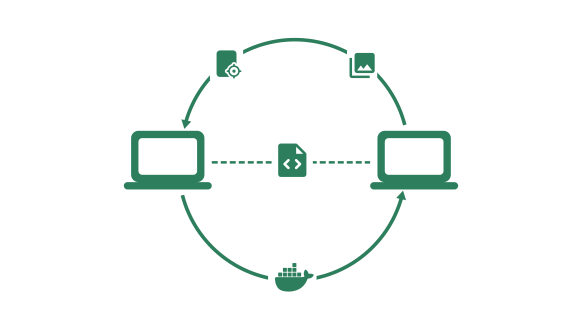

<div class="w-full">
  <div class="px-6 lg:px-10 max-w-7xl m-auto">
    <div class="py-6 px-6 lg:px-10 rounded-xl bg-[#f1fbff] pb-10 mt-6">
      <div>
        <div class="text-2xl lg:text-3xl font-semibold mb-6">
          Never write the same code in multiple builds again
        </div>

        <div class="lg:grid grid-cols-10">
          

          <ul class="text-gray-500 text-lg pt-8 lg:pt-0 pl-4 col-span-5 lg:pl-12 list-disc">
            <li class="pb-2">Reuse targets, artifacts, and images across multiple Earthfiles, even ones in other repositories.</li>
            <li class="pb-2">Import from any other build in a single line.</li>
            <li>Create vast and efficient build hierarchies that only execute steps impacted by your changes.</li>
          </ul>
        </div>
      </div>
    </div>
  </div>
</div>
